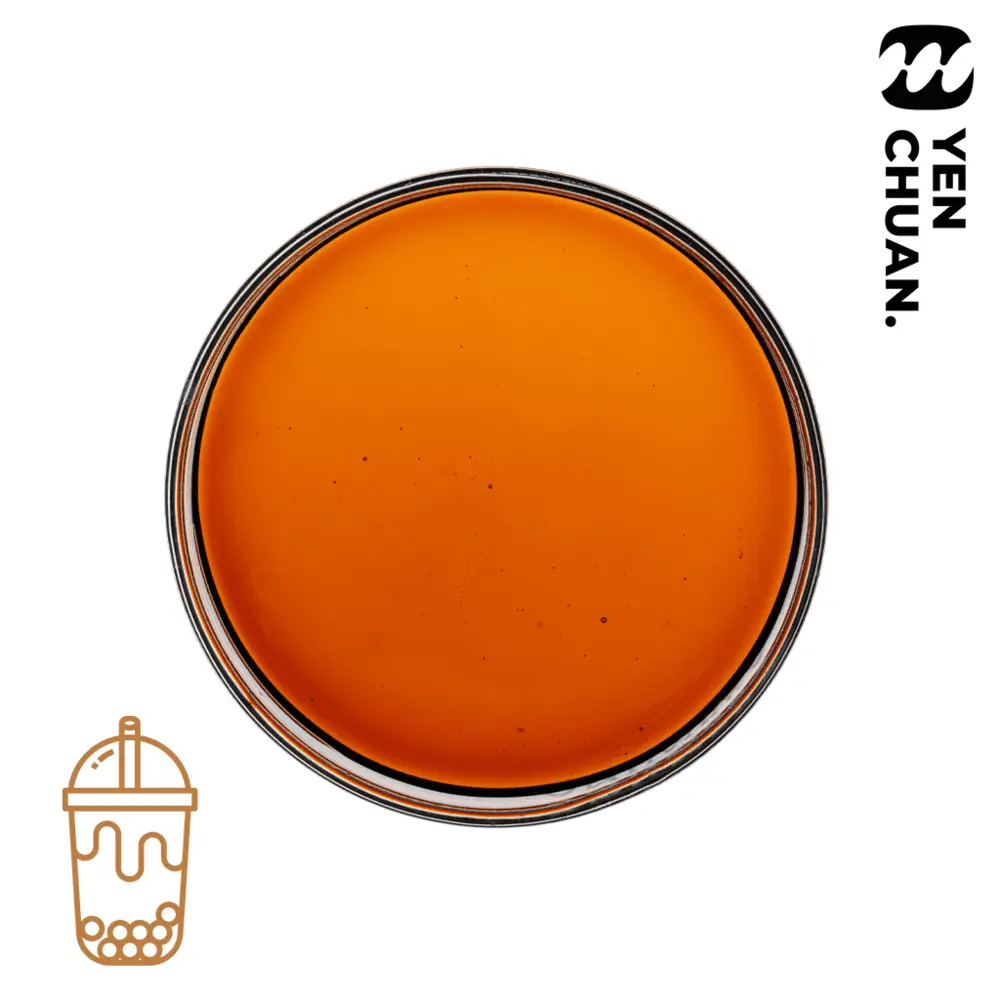

Articles / AI-drafted (demo)
Building a syrup menu: 16 classic syrups and how shops use them
2026-11-13 · AI-drafted demo
AI-drafted demo: the topic follows what leading suppliers write about; the content uses only Yen Chuan's own product data. On the live site every AI article is approved by Yen Chuan before publishing.

Syrups are the quickest way to add new drinks to your menu without new equipment. Our classic syrup range has 16 flavours, all in 5kg bottles, 4 bottles per carton, with a listed MOQ of 15 cartons. Confirm the order quantity for each flavour with our sales team; mixed-flavour cartons are not confirmed in the public catalogue.
For brown sugar and caramel drinks
- Tiger Dot syrup — for the striped brown sugar boba milk look.
- Brown sugar syrup — to flavour tapioca pearls and milk drinks.
- Thick milk caramel, caramel, sea salt caramel and pudding caramel — for a richer, dessert-style menu.
For café-style drinks
Vanilla, hazelnut, chocolate and tiramisu work in both coffee and milk tea, which helps shops that serve both.
For seasonal and signature drinks
Taro, matcha white chocolate, rose, honey and sugar cane juice make it easy to launch a limited-time drink or a summer special.
A simple way to start
- Pick one brown sugar or caramel syrup for your best-seller.
- Add one café flavour if you also sell coffee.
- Rotate one seasonal flavour every few months and keep the ones that sell.
Need a flavour that is not on the list? Our lab can develop a custom syrup for you.